Matthew A. Davis, MBA
Operations & Corporate Development · Systems Design · Strategic Communications · Independent R&D
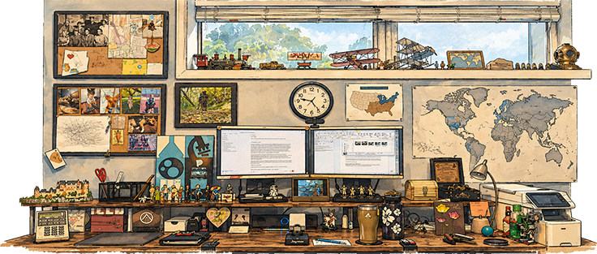
Partner portals · 2023 — Present
Every Shared Health Services partner facility gets its own private, login-protected library: policy and procedure manuals, protocols, algorithms, forms, training materials, coverage guidance, reimbursement references, and documentation tools a wound care and hyperbaric program runs on, under the facility’s own name. I designed the structure, wrote most of what lives in it, and keep it current so staff always know where to find the answer and whether the document in front of them is the latest version.
What follows is an example of a partner portal with identifying information removed, from the home page through a complete documentation pathway.
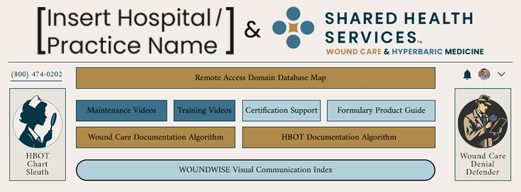
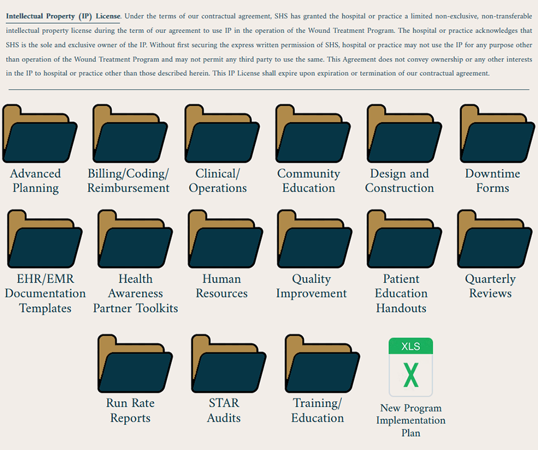
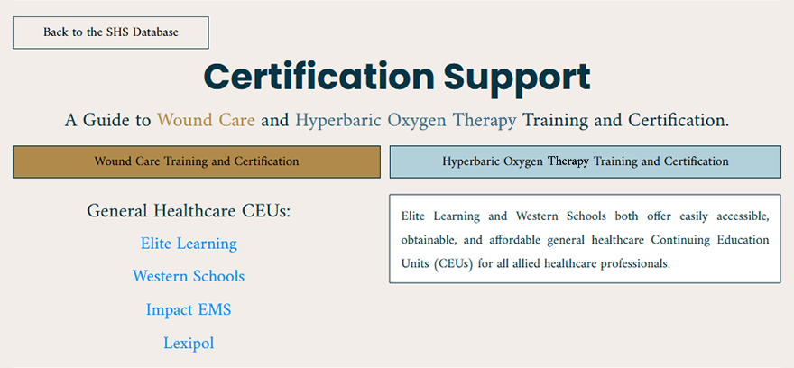
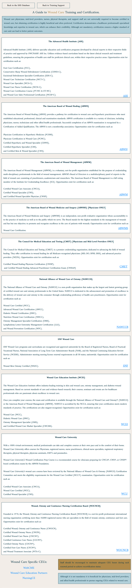
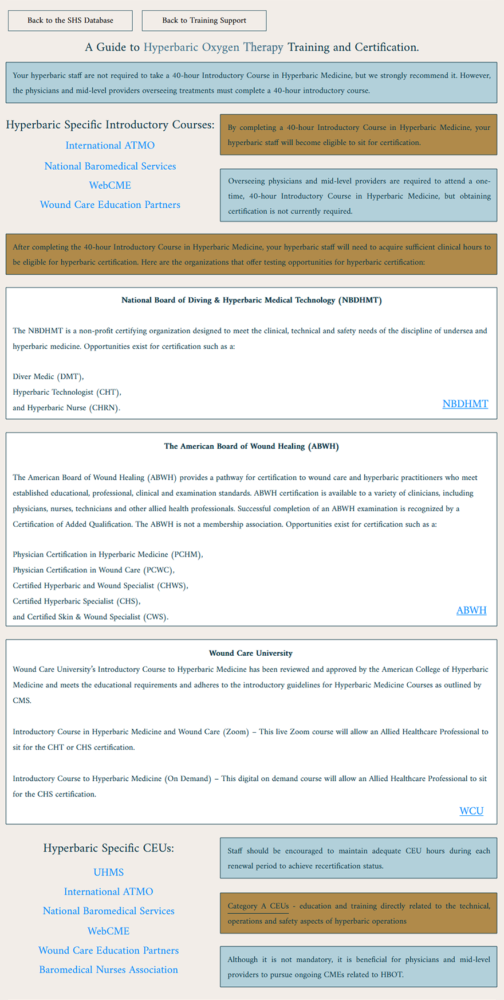
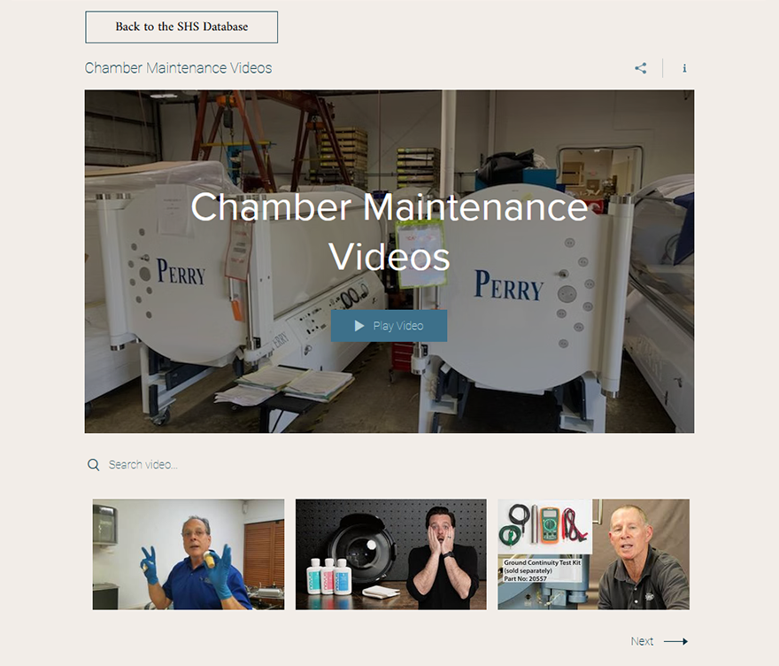
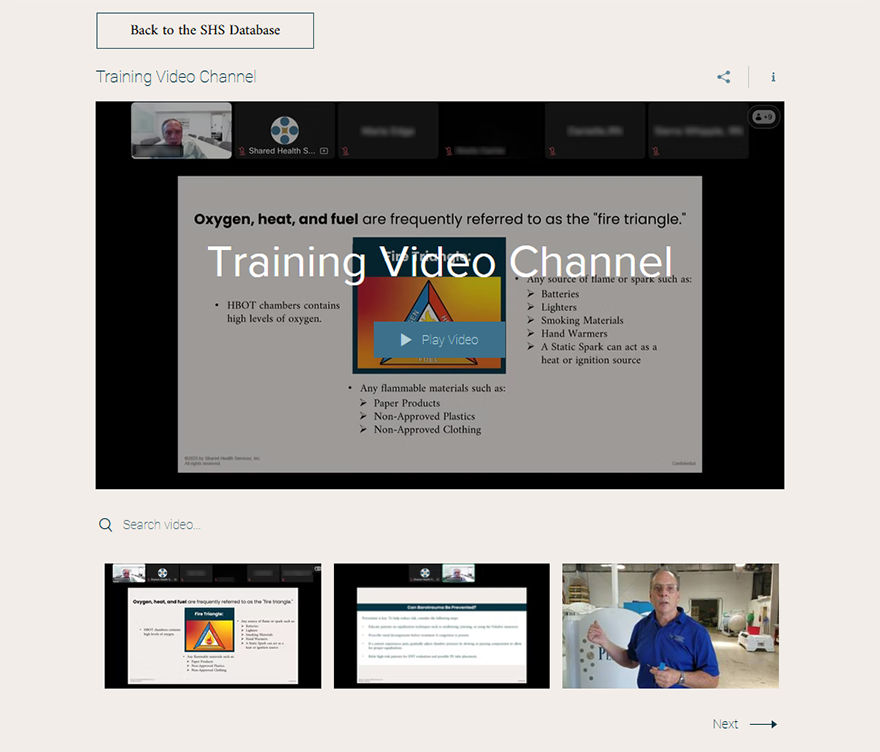
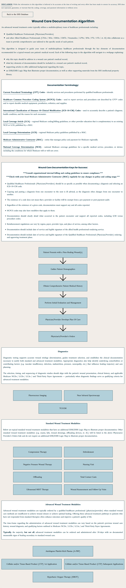
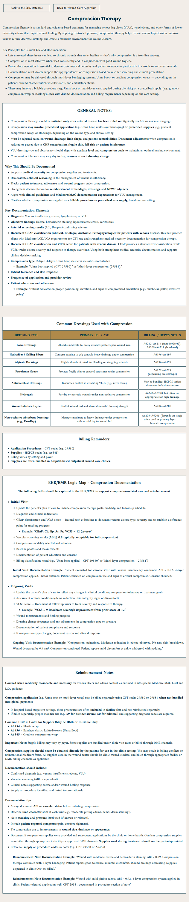
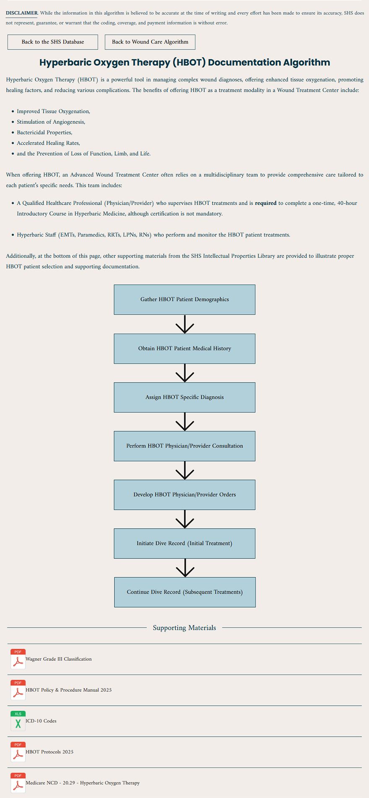
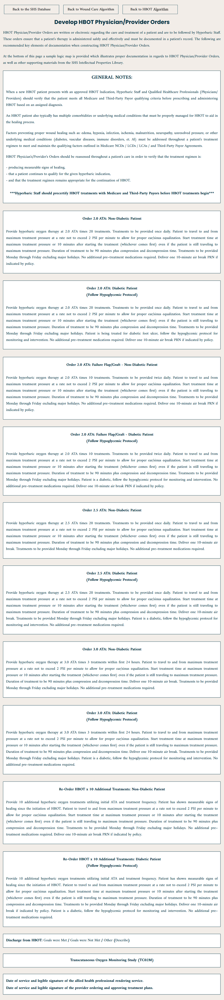